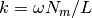

pmesh.transfer module¶
Deprecated since version 0.1.
-
class
pmesh.transfer.TransferFunction[source]¶ Bases:
objectthese a a function of Window Transfer functions used by PM. they take the fourier-space field complex and the dimensionless circular frequency as inputs; complex is modified in-place.
some functions are factories: they return an actually window with the given parameter.
Working out the dimension of the input is important.
the output of Poisson introduces a dimension to rho_k! the output of SuperLanzcos introduces a dimension to rho_k!
w is a tuple of (w0, w1, w2, …) w is in circular frequency units. The dimensionful k is w * Nmesh / BoxSize (nyquist is at about w = pi) they broadcast to the correct shape of complex. This is to reduce memory usage somewhat. complex is modified in place.
-
static
Gaussian(smoothing)[source]¶ smoothing is in mesh units; Notice that this is different from the usual PM split convention. (used in Gadget2/3) The PM split is cut = sqrt(0.5) * smoothing
-
static
Inspect(name, *indices)[source]¶ inspect the complex array at given indices mostly for debugging.
-
static
Laplace(pm, complex)[source]¶ Take the Laplacian k-space: complex *= -w2
where this function performs only the -w **-2 part.
Note that k = w * Nmesh / BoxSize, thus the usual laplacian is
- k ** 2 * complex = (Nmesh / BoxSize) ** 2 (-w**2) * complex
-
static
NormalizeDC(pm, complex)[source]¶ removes the DC amplitude. This effectively divides by the mean
-
static
Poisson(pm, complex)[source]¶ Solve Poisson equation in k-space: complex /= -w2
Notes about gravity:
gravity is
where .
hence
where this function performs only the part.
-
static
PowerSpectrum(wout, psout)[source]¶ calculate the power spectrum. This shall be done after NormalizeDC and RemoveDC
-
static